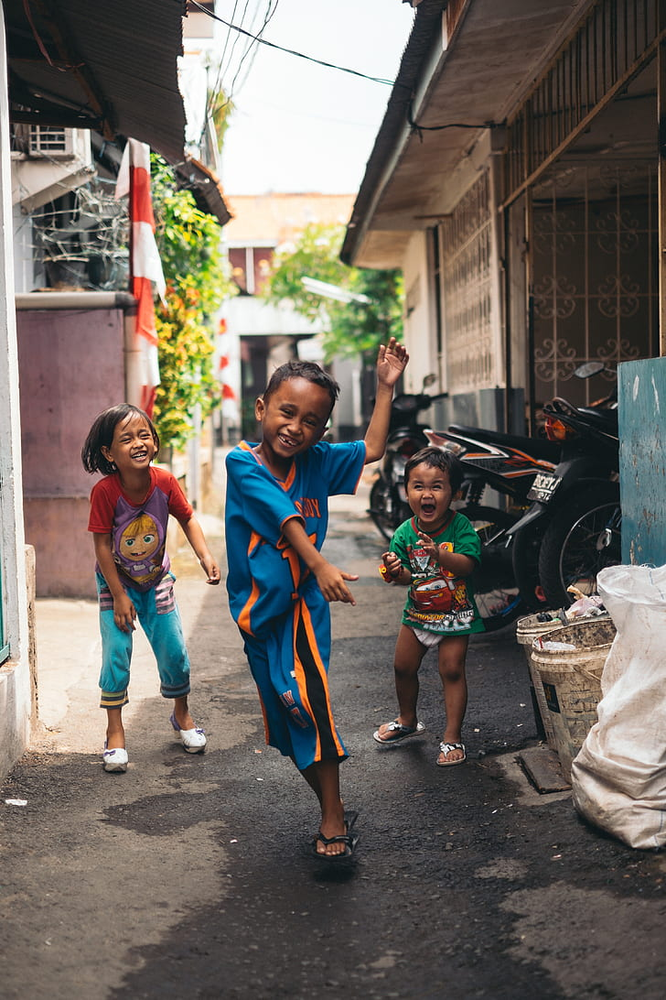

Créez des synergies entre vos services, associations et établissements pour un impact social ancré et durable sur votre territoire.
Les collectivités territoriales — communes, intercommunalités, départements, régions — sont des acteurs essentiels du lien social. En s'associant au Sourire en Mouvement, vous amplifiez votre impact sur les publics fragilisés de votre territoire.
Nous vous proposons de co-construire des solutions adaptées à votre contexte local : hôpitaux, EHPAD, écoles primaires, centres de rééducation, MAS…
Un partenariat public-associatif gagnant-gagnant, au service du bien vivre ensemble.
Engager un partenariat
Nos actions s'articulent autour des trois grandes priorités de la politique sociale territoriale.
Équiper les établissements de santé de votre territoire en outils d'apprentissage, de mouvement et de divertissement adaptés.
Soutenir les établissements scolaires en difficulté avec des équipements pédagogiques modernes et inclusifs.
Créer des liens intergénérationnels et interculturels à travers des projets collectifs porteurs de sens.
Nous n'imposons pas de solution clé en main. Nous travaillons avec vous pour identifier les besoins réels de votre territoire et concevoir des réponses adaptées.
Identification des établissements prioritaires et des besoins non couverts sur votre territoire.
Co-conception avec vos services, les établissements bénéficiaires et nos équipes d'une solution sur-mesure.
Installation des équipements, communication territoriale et rapport d'impact pour vos élus et habitants.